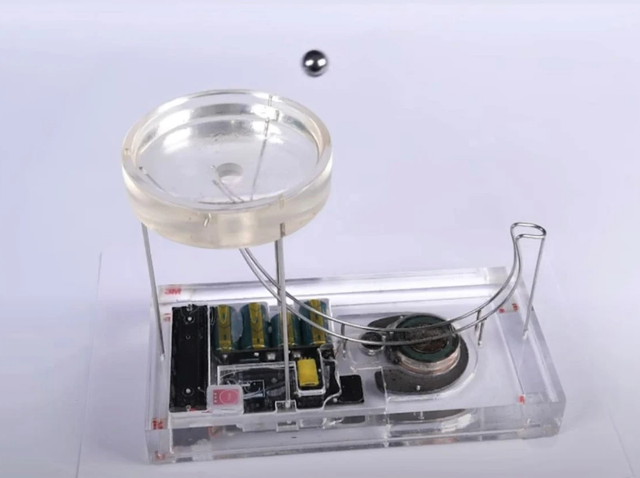
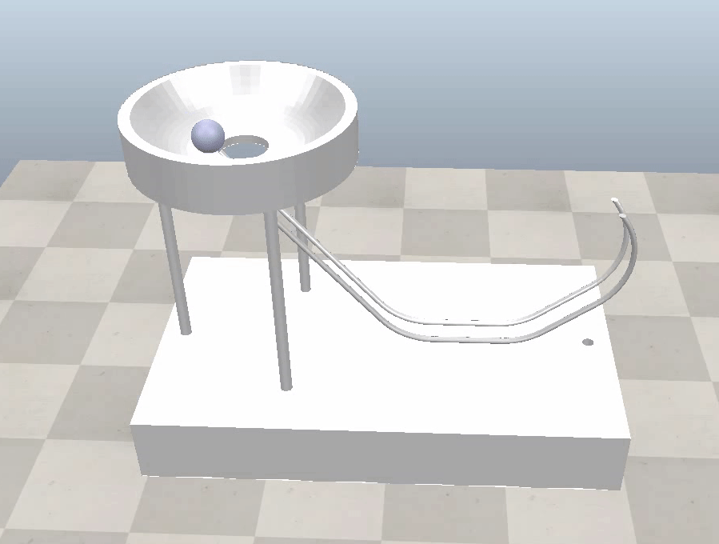
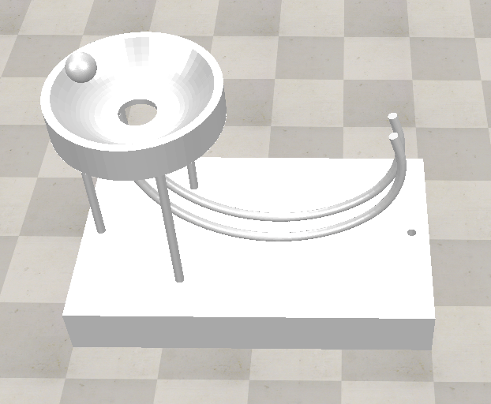

任務一 <<
Previous Next >> magnet
磁力吸引
有關磁力吸引的鋼球循環運動系統, 請參考這個影片. 或者透過課程檔案下載密碼觀看這個影片.
根據這個網站宣稱是此一 Perpetual Motion Simulator 的原始創作者.
同時參考 A perpetual motion machine powered by electromagnetism.pdf (需要下載密碼)
電腦輔助設計與實習課程的任務一即可根據此一裝置的設計, 先採用電腦輔助設計軟體, 繪製系統所需的 3D 零組件, 然後轉為 STL 格式, import 進入 CoppeliaSim, 接著根據影片說明, 利用近接感測器(例如: 電感式近接開關, Inductive proximity sensor) 控制電磁鐵開關, 設法透過磁力吸引讓鋼球具有足夠動能返回圓形平台.
有關利用 Arduino 控制卡與相關電路設計產生電磁力控制的模擬, 請參考 PICSimLab 頁面中的說明.
一旦完成 CoppeliaSim 與 Arduino 電路設計等機電資系統整合模擬, 就可以進一步利用 3D printer 列印出所需零組件, 結合實體電路設計完成此一系統的虛實整合.
機電模擬系統:
下載支援 IPv6 網路協定版本 CoppeliaSimEdu_4.5.1_rev4_for_cd2023.7z (需要下載密碼)
CoppeliaSim 使用者手冊, CoppeliaSim 4.3.0 使用手冊網站
模擬磁力的討論, 1, 2
Force Control Modeling
simpleMagnetDemo.ttt
模擬原理:
Perpetual Motion Simulator 主要的電路設計包含右側軌道下方的電磁鐵, 通電後可產生一定大小的磁吸力, 當圓形鐵球循著軌道由平台孔洞往下滾動, 經過軌道下方近接感測器 (Proximity sensor) 時 (距離 3mm-5mm), 透過感應, 控制電路將會短暫啟動電磁鐵 (10 miliseconds), 促使圓形鐵球加速滾動, 其磁力大小約略與圓形鐵球距離的平方成反比 (Computational Electromagnetics, 磁場模擬).
因此圓形鐵球除了從平台高度落下時, 將位能轉換為動能外, 與軌道滾動磨擦以及空氣阻力所損耗的運動能, 將額外由電磁鐵開關間所得到的磁力吸引能量進行加速, 以便取得足夠的動能在脫離軌道末端後, 重新回到圓形平台.

(image from here)
電磁力未啟動下的 perpetual motion simulator CoppeliaSim 場景模擬:

Images and part files in Onshape (STL file import into CoppeliaSim 尺寸由 mm 放大10 倍至 cm, 且 z 軸向上, 場景中圓球直徑為 12.825 cm, 平台圓孔直徑為 20 cm)

Perpetual Motion Simulator in Onshape, 轉入 CoppeliaSim 後放大 10 倍, 且 z 軸向上之模擬場景, 下載 perpetual motion simulator stage2.7z (需要下載密碼)
有關如何在 Onshape 繪製零組件, 轉出 STL 檔案, 轉入 CoppeliaSim 並進行組件 divide and group, 請參考這個教學影片.
以下 Python 程式可在 CoppeliaSim 場景檔案中建立所需的模擬組件:
啟動 CoppeliaSimEdu_4.5.1_rev4_for_cd2023.7z (支援 IPv6 網路協定版本, 需要下載密碼), 然後在 Portable_2023_fall_1.3g_5g.7z (需要下載密碼) 可攜環境啟動後, 以 pip install pyzmq cbor keyboard 安裝所需模組, 然後執行下列 zmqRemoteAPI IPv6 程式, 將滑鼠在場景中點擊後, 按下 q 鍵即可終止場景模擬:
# zmqRemoteApi_IPv6 為將 zmq 通訊協定修改為 IPv4 與 IPv6 相容
# pip install pyzmq cbor keyboard
from zmqRemoteApi_IPv6 import RemoteAPIClient
import time
import math
import keyboard
# 利用 zmqRemoteAPI 以 23000 對場景伺服器進行連線
client = RemoteAPIClient('localhost', 23000)
# 以 getObject 方法取得場景物件
sim = client.getObject('sim')
box = sim.getObject('/box')
# 啟動模擬
sim.startSimulation()
# 建立尺寸數列, 分別定義 x, y, z 方向尺寸
x = 0.2
y = 0.2
z = 0.1
size = [x, y, z]
# 利用 size 數列, 建立圓柱物件, 2 代表 cylinder
# 8 表示 respondable, 1 為 質量
digit1_handle = sim.createPureShape(2, 8, size, 1, None)
# 將圓柱物件命名為 digit1, 若用於機械計分可做為個位數轉盤
# 之後可再導入帶有數字組立的外型零件
sim.setObjectAlias(digit1_handle, 'digit1')
# 轉角單位為徑度
sim.setObjectOrientation(digit1_handle, -1, [0, math.pi/2, 0])
# 起始物件中心位於 [0, 0, 0], 為了位於地板, 往 z 提升一個半徑高度
sim.setObjectPosition(digit1_handle, -1, [0, 0, x/2])
# 建立 revolute joint 命名為 joint, 且將 joint mode 設為 dynamic, control mode 設為 velocity
joint1_handle = sim.createJoint(sim.joint_revolute_subtype, sim.jointmode_dynamic, 0, None)
sim.setObjectInt32Param(joint1_handle, sim.jointintparam_dynctrlmode, sim.jointdynctrl_velocity)
sim.setObjectAlias(joint1_handle, 'joint1')
# 取得 cylinder 的位置座標
digit1_pos = sim.getObjectPosition(digit1_handle, -1)
joint1_pos = [digit1_pos[0], digit1_pos[1], digit1_pos[2]]
# 將 joint1 至於 cylinder 中心
sim.setObjectPosition(joint1_handle, -1, joint1_pos)
# 取得 digit1_handle 的方位
digit1_ori = sim.getObjectOrientation(digit1_handle, -1)
# 將 joint1_handle 方位與 digit1 對齊
sim.setObjectOrientation(joint1_handle, -1, digit1_ori)
# 將 joint1 置於 box 上
sim.setObjectParent(joint1_handle, box, True)
# 將 cylinder 置於 joint1 上
sim.setObjectParent(digit1_handle, joint1_handle, True)
# 鎖定 joint1
sim.setJointForce(joint1_handle, float('inf'))
print("基本場景建立完成!")
# 設定主迴圈
while True:
# 設定 joint1 目標速度
sim.setJointTargetVelocity(joint1_handle, 10)
# 讓 coppeliasim 有時間按照設定讓 joint1 旋轉
time.sleep(0.01)
if keyboard.is_pressed('q'):
# 可以按下 q 鍵跳出重複執行迴圈
break
# 終止模擬
sim.stopSimulation()
下載 zmqRemoteAPI Python for cad2023.7z (需要下載密碼)
在 simpleMagnetDemo.ttt 中利用 Lua 以 proximity sensor 感測與物體的距離後, 產生電磁吸引力的範例程式:
function sysCall_init()
-- 初始化 callback 函數，在模擬開始時執行
sensor = sim.getObject('./sensor')
-- 取得命名為 'sensor' 的物件 handle。 此處使用 proximity 感測器，用於檢測物體之間的距離
shape = sim.getObject('.')
-- 取得目前 script 所依附的物件 handle，即包含此 script 的物件 handle
sim.setObjectInt32Param(shape, sim.shapeintparam_static, 0)
-- 將物體設定為非靜態，讓其在模擬中發生動態運動
nominalForce = 0.001
-- 設定電磁吸引力的標準值
enabled = true
-- 啟用電磁吸引力
previousPos = sim.getObjectPosition(shape, sim.handle_world)
-- 取得物體的初始位置並儲存在 previousPos 變數中，用於偵測物體是否移動
end
function sysCall_actuation()
-- 驅動 callback 函數，在每個模擬步驟中執行
if enabled then
-- 如果啟用電磁吸引力，執行下列程式碼
local r, dist, pt, obj = sim.handleProximitySensor(sensor)
-- 使用 proximity 感測器偵測物體是否接近
if r > 0 then
-- 如果偵測到物體
dist = dist + 0.02
-- 增加一個 offset，以避免物體接觸時產生無限大的吸引力
local force = nominalForce / (dist * dist)
-- 計算吸引力的大小，與距離的平方成反比
local m = sim.getObjectMatrix(shape, sim.handle_world)
m[4] = 0
m[8] = 0
m[12] = 0
-- 取得物體的轉換矩陣，不考慮平移部分
local forceVector = sim.multiplyVector(m, {0, 0, force})
-- 將力向量從局部座標系轉換為絕對座標系
sim.addForceAndTorque(shape, forceVector, {0, 0, 0})
-- 將計算得到的力應用於物體的質心，持續一個 time step
if notFirstPass then
local p = sim.getObjectPosition(shape, sim.handle_world)
local dx = {p[1] - previousPos[1], p[2] - previousPos[2], p[3] - previousPos[3]}
local d = math.sqrt(dx[1] * dx[1] + dx[2] * dx[2] + dx[3] * dx[3])
-- 計算物體是否移動
if d < 0.0001 then
sim.setObjectInt32Param(shape, sim.shapeintparam_static, 1)
sim.resetDynamicObject(shape)
enabled = false
-- 如果物體沒有移動，將其設為靜態
end
previousPos = p
end
end
end
notFirstPass = true
end
任務一 <<
Previous Next >> magnet